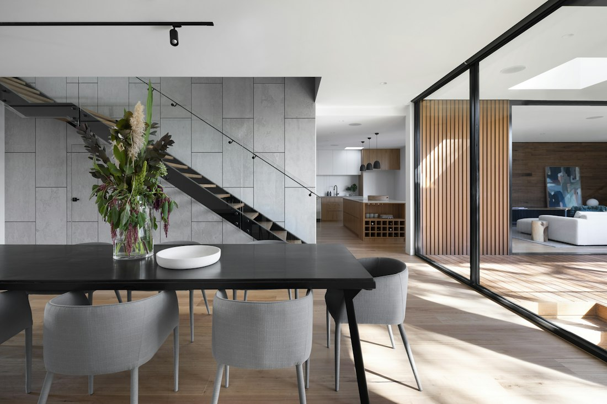

Möbel nach Maß
Stauraum, der den Raum versteht. Von der Nische bis zur großzügigen Wandlösung werden Maße, Nutzung und Details gemeinsam gedacht.
Im Formular auswählen ↗HOLZ · HALTUNG · HANDWERK
Vom ersten Maß bis zur letzten Kante. Ein Handwerkskonzept für Möbel und Innenausbau, die einen Platz nicht einfach füllen. Sondern ihm Charakter geben.
 Illustratives Bild · fiktives Betriebskonzept
Illustratives Bild · fiktives BetriebskonzeptENTDECKEN / DIREKT AUSPROBIEREN
Wählen Sie eine digitale Materialstudie. Das räumliche Möbelmodell reagiert auf Ihre Auswahl; die Darstellung ersetzt kein echtes Oberflächenmuster.
DIGITALE OBERFLÄCHENSTUDIE
Eine helle Materialrichtung mit sichtbarer Struktur. Die digitale Möbelstudie zeigt, wie sich eine Oberfläche auf den Gesamteindruck auswirkt.
Farbe und Struktur sind digitale Illustrationen. Kein echtes Möbelangebot oder Materialmuster.
Interaktives Gestaltungsbeispiel von peters webdesign. Die Auswahl bleibt nur auf dieser geöffneten Seite; es erfolgt keine Buchung oder Übermittlung.
LEISTUNGEN / HANDWERK
Ein vollständiger Überblick über das fiktive Leistungsangebot von WERKSTÜCK. Wählen Sie ein Thema und probieren Sie den passenden Weg zur Anfrage aus.
Stauraum, der den Raum versteht. Von der Nische bis zur großzügigen Wandlösung werden Maße, Nutzung und Details gemeinsam gedacht.
Im Formular auswählen ↗Eine zusammenhängende Gestaltung für Wohnen und Arbeiten. Material, Proportion und vorhandene Architektur bilden die Grundlage.
Im Formular auswählen ↗Bestehende Lieblingsstücke können neue Aufmerksamkeit verdienen. Ob eine Aufarbeitung sinnvoll ist, hängt von Zustand und Material ab.
Im Formular auswählen ↗Beschläge, Kanten und ein sauberer Anschluss an den Raum sind Teil der Planung. Umfang und Montage werden vorab abgestimmt.
Im Formular auswählen ↗
Stimmungsbild · keine eigene Referenz oder tatsächlicher BetriebDAS KONZEPT / WERKSTÜCK
WERKSTÜCK zeigt ein fiktives Handwerksstudio für Möbel und Innenausbau. Im Mittelpunkt stehen nachvollziehbare Planung, der bewusste Umgang mit Materialien und Lösungen, die zu einem Raum passen.
Das Materialstudio macht Gestaltungsrichtungen direkt erlebbar. Die dargestellten Oberflächen sind digitale Farb- und Strukturbeispiele. Eine Materialentscheidung würde in einem echten Projekt anhand konkreter Muster getroffen.
DER ABLAUF / SCHRITT FÜR SCHRITT
So könnte der Ablauf in diesem Betriebskonzept aussehen. Die Schritte sind beispielhaft und kein tatsächliches Leistungsversprechen.
Raum, Maße und Anforderungen bilden den Ausgangspunkt.
Proportionen, Material und Nutzung werden als Lösung zusammengebracht.
Nach Freigabe folgen die vereinbarten Fertigungs- und Montageschritte.
GUT ZU WISSEN
Ein transparenter Überblick über das Beispiel und seine Funktionen.
Das Demoformular kann einen Projektgedanken aufnehmen. Ein tatsächliches Aufmaß und die technische Machbarkeit wären mit dem ausführenden Betrieb zu klären.
Nein. Das Materialstudio ist eine digitale Gestaltungsstudie. Farbe, Maserung und Haptik können in der Realität abweichen.
Ein individuelles Möbelstück hängt von Maß, Material und Ausführung ab. Diese Demo nennt deshalb keine verbindlichen Werkstattpreise.
KONTAKT / DAS FORMULAR ERLEBEN
Beschreiben Sie ein Beispielprojekt oder fragen Sie dieses Webdesign für Ihren Betrieb an.